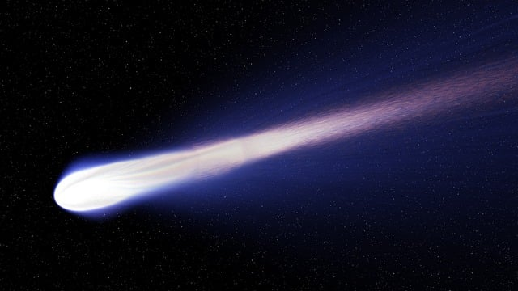

co odpowiada ponad sześciu latom (6,38 lat). Jej najbliższe zbliżenie do Ziemi zaplanowane jest na 29 stycznia 2024 roku.
Będzie wtedy można spostrzec tę kometę przez lornetkę.

Odkryto ją 1 stycznia 1965 roku dzięki Obserwatorium Astronomicznemu Zijinshan,
znajdującemu się na Górze Purpurowej w Chinach, na wysokości 267 metrów nad poziomem morza, w Nankinie, w prowincji Jiangsu.
Kometę 62P/Tsuchinshan zalicza się do rodziny Jowisza.
Obiekty z tej grupy są silnie oddziaływane grawitacyjnie przez gazowego olbrzyma. Ich orbity prowadzą pomiędzy Słońcem a Jowiszem.